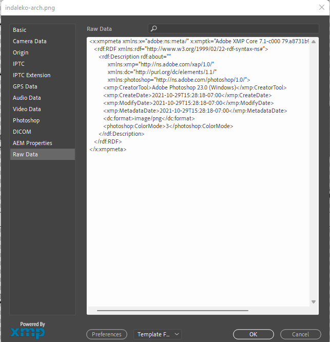
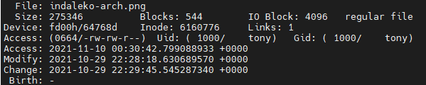
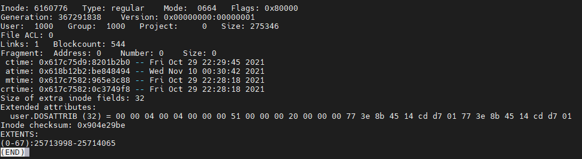

Why The Narrative Meta-Data Tells Should Concern Legal Professionals - Part I
Much of my work relates to meta-data. That is, "data about data." For example, the name, size, and creation date of a given file is a form of meta-data. One of the areas of computer technology I have been working in for decades is storage, particularly the part of storage that converts physical storage (local or remote) into logical storage.
Usually, we call the software that converts physical storage into logical storage a file system. One significant benefit of using file systems is that they provide a (mostly) uniform model for accessing "unstructured data" (files).
Traditionally, we organize files into directories. Directories, in turn, can be categorized into other directories. This is then presented to users as a hierarchical information tree, starting with a "root" and then descending, with each directory containing more directories and other files.
I have already mentioned a few classes of information maintained by file systems: name, size, creation date. Many file systems also provide additional information (meta-data) about files, including:
- Who can access this file?
- When was the file last modified (note that this is distinct from when it was created)?
- When was the file last accessed (often without being modified)?
- Can the file be written (the "read-only" bit is quite common)?
- Is the file encrypted?
- Is the file compressed?
- Is the file stored locally?
- Are there special tags ("extended attributes") applied to the file?
Not all file systems support all these different meta-data elements. For example, some file systems have limitations, such as timestamps that are only accurate to the nearest few seconds; it's typical only to update the "last access" time once an hour (or longer). This is because there is a cost associated with changing that information that can have a measurable impact on the file system's performance.
File systems are not the only place where we find meta-data. For example, when you take a photograph with your camera or your phone, it usually stores this in a standard format such as JPEG and other image formats. For image formats, this is known as the Exchangeable Image File Format (EXIF). Information here, which has changed over time and may not necessarily be recorded (it depends upon the device taking the photo, for example), includes timestamps, camera settings, possibly a thumbnail, copyright information, and geo-location data.
Analyzing and understanding meta-data can be directly helpful when it comes to looking at image files. Ironically, when the meta-data for an image is consistent, you can't tell if it has been tampered with. Yet, when the meta-data for an image is inconsistent, you can reasonably conclude that the image has been modified in some way.
For example, a case that came up for me a couple of years back asked me to review another expert's report. That expert stated they had a copy of the file as extracted from a hard disk drive, and they had it from a compact flash device. The meta-data varied between the two files.
The version of the image on the hard disk showed:
- File system modification was November 10, 2005, 20:25:04
- EXIF creation was November 10, 2005, 20:25:04
- EXIF CreatorTool was Photoshop Adobe Elements 3.0
- EXIF Model was Canon EOS 20D
The version of the image on the compact flash (CF) device showed timestamps of:
- File system modification was November 10, 2005, 20:25:04
- File system creation was November 10, 2005, 20:25:04
The expert report did not indicate what the EXIF data of the original file showed. However, what was clear is that the image had been loaded into Adobe Elements 3.0 (which, interestingly enough, was distributed with the Canon EOS 20D). While I did not have a Canon EOS 20D to verify (if it had been my report, I would have suggested doing so) and thus could not confirm that it didn't write "Photoshop Adobe Elements 3.0" into the EXIF meta-data, I did not think that was likely (and the other expert stated it did not).
So, I was able to conclude that "the meta-data on the image is consistent with it being modified." Why?
- The name of the application was written into the image. Thus, at a minimum, the image's meta-data was modified, even if the actual contents were not modified (remember, I didn't have the original images; I was just looking at meta-data).
- The timestamps were identical between the CF copy and the hard drive copy. When an application modifies a file, it usually does so to a new copy and then renames the new copy of the file to the old copy of the file. But then the timestamps would normally not be modified back to the original timestamps. But, of course, the application might do that. So, again, if I had been writing the expert report, I'd have tested to make sure Elements 3.0 worked as I expected it would. Since the original expert stated it did, I was able to concur with that expert's analysis.
- If an application overwrites the existing file, the creation timestamp and the modification timestamp will differ.
EXIF meta-data can be modified - I use Photoshop to look at and modify meta-data sometimes (e.g., to add copyright or strip out geo-location information before I post the photo). Still, the file system wouldn't modify it.
File system meta-data can be modified - an application can invoke operating system calls and change those timestamps, but
I decided to check what information Photoshop shows me now. It uses the newer (and more general/extensible) XMP meta-data format:

And here are the file system timestamps for that file:

Notice that the access timestamp has been updated (because I read it with Notice that the access timestamp has been updated (because I read it with Photoshop) but the modify and change times have not been updated. Since this was a Linux system, I had to dig a bit more to extract the creation timestamp (the Ext4 file system stores the creation timestamp, but most utilities use an older interface that does not make it available)

As you can see, the other timestamps also match, and the original creation time ("crtime" versus "change time," which is shown as "ctime") is the same as the modified time.
Thus, I know that the application created and wrote the file in succession - notice that the creation time and modified time are slightly different (that second value is in nanoseconds, so it is too small to show up when displayed as an "accurate to the nearest second" display). However, the creation time is slightly smaller than the modified time. Then the change time is a second later. This is precisely what I'd expect to see:
- The application creates a new file with a temporary name. This sets the creation timestamp of the file.
- The application writes data to the new file. This sets the modified timestamp of the file.
- Application renames the temporary named file to the final named file. This is a change to the file meta-data, which updates the change time. Since the file contents did not change, the modified timestamp doesn't change. That access timestamp is today, as I opened the file to look at its meta-data.
Meta-data tells a story; it isn't necessarily inviolable, but modifying it in a consistent way with "how things work" is more complicated than one might imagine. As our computer systems have become more sophisticated, our mechanisms for verifying meta-data have similarly improved. For example, it used to be that the "state of the art" in signing a document was to sign it physically. If you were paranoid, you might initial each page, which made it more challenging to modify. Today, you can digitally sign a PDF document; that signature covers the document's content and includes a timestamp along with a unique signature associated with the signing person. At present, faking such a digital signature is out of reach and modifying the actual document is impractical. That's the power of combining meta-data with digital signatures.
See continuation of meta-data discussion here.